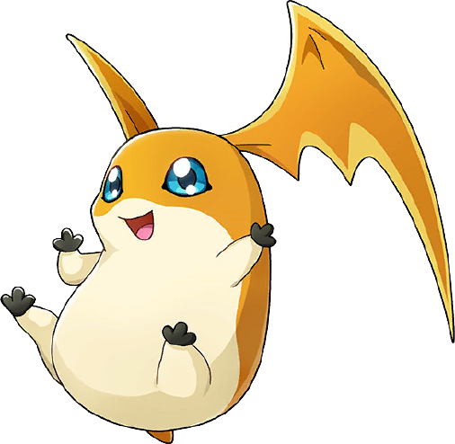
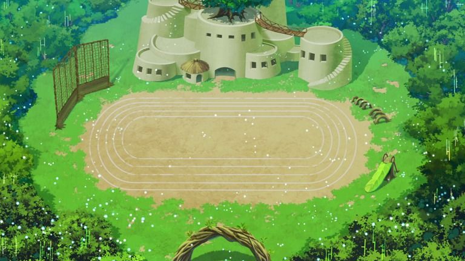

Parabéns! Patamon agora é o seu parceiro. Ele é um Digimon de atributo vacina e vai te acompanhar em sua missão. Vocês estão na aldeia da Babamon, uma Digimon Anciã. Esse é um dos últimos lugares no digimundo que ainda não foi atacado. Aqui os digimons passam por um treinamento duro para se tornarem mais fortes. Porém rumores dão conta que um ovo especial foi visto na Native Florest, fora dos limites da aldeia. O que você deve fazer? Clique aqui!
